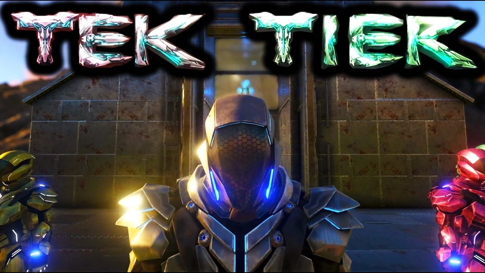

ARK SURVIVAL EVOLVED©
Welcome to the unofficial community website about Ark Survival Evolved designed and created by @G&H
"Patch 254: Tek Tier, Purlovia, Baryonyx, Basilosaurus, Ovis, Hair, Ark Sale, and more!"

This update is one of the biggest updates introduced to Ark Survial Evolved! This made all Ark Player hyped for this game. Many new players are joining our wonderfull community for the early acces benefits, Join Quick! Here are some of the patch notes:
1. New Mechanic: Hairstyles & Facial Hair (with real-time growing), Hair Dyeing & Haircutting + Scissors.
2.Tek Tier Phase 1: Tek Engram system, Element Resource system, Tek Replicator, Tek Rifle, Tek Helmet, Tek Visor, Tek Jetpack, Tek Boots, Tek Gloves, Tek Rex Saddle, Tek Transmitter and more.
3. New Dino: Ovis Aries - A docile sheep with large horns. Should be helpful in farming. [Dossier]
4. New Dino: Basilosaurus - A dolphin-like mammal that’s specifically adapted for shallow-water travel. It’s gentle to humans but also hunted for its blubber. [Dossier]
5. New Dino: Purlovia - A small lizard-like carnivore that be tamed as a guard dog. You can’t ride it and it hibernates. [Dossier]
6. New Item: Lance (for jousting of course), and you can now also use a Shield when Weapon-Riding (provided you are using an appropriate Weapon).
7.Alliance-Chat channel.
8. Admin Command Logs & Chat Logs file-output options.
9. Troodon Scout now has an option to look for Corpses & Caches.
10. Tamed Dinos now have an option to disable their resource-harvesting.
11. Holding Left or Right when dismounting a Dino will now dismount you in that direction.
12. Significantly increased Scorched Earth loot drop quality.
13. Added five more Player and Dino levels.
14. Fixed Allosaurus spawning inside bases.
15. Fixed issue with being able to clip through world geometry.
16. Fixed Supply Crates respawn logic (would previously have stopped some cave crate spawns).
17. 16 more Explorer Notes.
18. Soups/Beers can no longer be eaten by Dinos.
19. SteamOS version works properly again.
20. Audio system is now fully streamed. Hundreds of MB saved, slight potential perf loss. If you want to use the old system (memory-intensive), launch with -oldaudio.